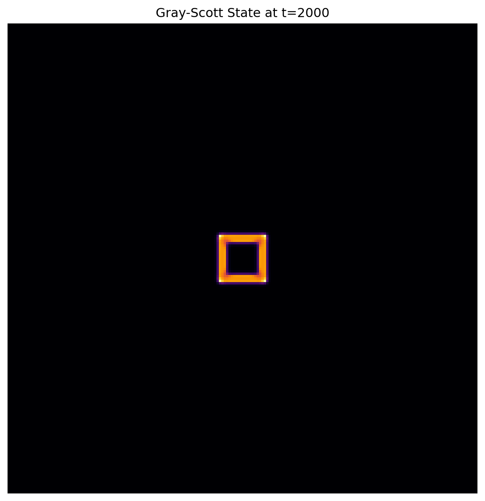

How does a leopard get its spots? In 1952, Alan Turing proposed that complex biological patterns could arise from a simple system of two interacting chemicals: 1. Reaction: The chemicals react with each other (transforming structure). 2. Diffusion: The chemicals spread out across space.
This is known as a Reaction-Diffusion System. We can model it using Partial Differential Equations (PDEs). The specific flavor we are simulating here is the Gray-Scott Model:
Where: * \(u\) and \(v\) are chemical concentrations. * \(D_u, D_v\) are diffusion rates. * \(F\) is the “Feed” rate (adding chemical \(u\)). * \(k\) is the “Kill” rate (removing chemical \(v\)).
Interactive Simulation
Below is a live simulation running directly in your browser using Observable JS.
Instructions: 1. Wait a moment for the pattern to grow from the center. 2. Click and Drag on the canvas to add more chemical manually. 3. Adjust Sliders: Change \(F\) and \(k\) to discover different “species” (Coral, Spots, Worms).
Code
viewof F = Inputs.range([0.01,0.1], {label:"Feed Rate (F)",value:0.0545,step:0.0001})viewof k = Inputs.range([0.03,0.07], {label:"Kill Rate (k)",value:0.0620,step:0.0001})viewof brushSize = Inputs.range([1,50], {label:"Brush Size",value:10,step:1})// 2. The Canvascanvas = DOM.canvas(800,400)// 3. The Simulation Logic{const ctx = canvas.getContext("2d");const w = canvas.width;const h = canvas.height;// Initialize Gridslet u =newFloat32Array(w * h).fill(1.0);let v =newFloat32Array(w * h).fill(0.0);let u_next =newFloat32Array(w * h).fill(1.0);let v_next =newFloat32Array(w * h).fill(0.0);// Seed a central squarefor (let i = w/2-10; i < w/2+10; i++) {for (let j = h/2-10; j < h/2+10; j++) { v[j * w + i] =1.0; } }// Parametersconst Du =0.2;// Diffusion u (Speed optimized)const Dv =0.1;// Diffusion vconst dt =1.0;// Mouse Interactionlet isDrawing =false; canvas.onmousedown= () => isDrawing =true; canvas.onmouseup= () => isDrawing =false; canvas.onmousemove= (e) => {if (!isDrawing) return;const rect = canvas.getBoundingClientRect();const x =Math.floor((e.clientX- rect.left) / (rect.width/w));const y =Math.floor((e.clientY- rect.top) / (rect.height/h));for(let dy=-brushSize; dy<=brushSize; dy++) {for(let dx=-brushSize; dx<=brushSize; dx++) {if (dx*dx + dy*dy <= brushSize*brushSize) {const idx = (y+dy)*w + (x+dx);if (idx >=0&& idx < w*h) v[idx] =1.0; } } } };// Main Loopwhile (true) {// Run multiple steps per frame for speedfor(let steps=0; steps<8; steps++) {for (let y =1; y < h -1; y++) {for (let x =1; x < w -1; x++) {const i = y * w + x;// Laplacian (Simple 5-point stencil)const lapU = (u[i-1] + u[i+1] + u[i-w] + u[i+w] -4*u[i]);const lapV = (v[i-1] + v[i+1] + v[i-w] + v[i+w] -4*v[i]);const uvv = u[i] * v[i] * v[i];// Gray-Scott Update u_next[i] = u[i] + (Du * lapU - uvv + F * (1- u[i])) * dt; v_next[i] = v[i] + (Dv * lapV + uvv - (k + F) * v[i]) * dt;// Constrain u_next[i] =Math.max(0,Math.min(1, u_next[i])); v_next[i] =Math.max(0,Math.min(1, v_next[i])); } }// Swap buffers [u, u_next] = [u_next, u]; [v, v_next] = [v_next, v]; }// Renderconst imgData = ctx.createImageData(w, h);const data = imgData.data;for (let i =0; i < w * h; i++) {const val = v[i];// Visualization: Map Chemical V to a Cyan/Blue color map// R=0, G=255*val, B=255 data[4*i +0] =0;// R data[4*i +1] =Math.floor(val *255);// G data[4*i +2] =Math.floor(Math.min(255, val *255+50));// B data[4*i +3] =255;// Alpha } ctx.putImageData(imgData,0,0);yield canvas;// Wait for next animation frame }}
The Python Implementation
While the interactive demo above runs in JavaScript (for web speed), as Data Scientists we model this in Python using numpy for vectorized operations.
This implementation highlights how we can treat a physical system as matrix operations—a foundational concept in Scientific Machine Learning.
Code
import numpy as npimport matplotlib.pyplot as pltfrom scipy.signal import convolve2ddef simulate_gray_scott(steps=2000):# Parameters N =200 Du, Dv =0.16, 0.08 F, k =0.0545, 0.0620 dt =1.0# Grid initialization U = np.ones((N, N)) V = np.zeros((N, N))# Initial disturbance in the center mid = N//2 r =10 U[mid-r:mid+r, mid-r:mid+r] =0.50 V[mid-r:mid+r, mid-r:mid+r] =0.25# Laplacian Kernel (3x3) laplacian = np.array([[0.05, 0.2, 0.05], [0.2, -1.0, 0.2], [0.05, 0.2, 0.05]])# Simulation Loopfor _ inrange(steps): Lu = convolve2d(U, laplacian, mode='same') Lv = convolve2d(V, laplacian, mode='same') uvv = U * V * V U += (Du * Lu - uvv + F * (1- U)) * dt V += (Dv * Lv + uvv - (k + F) * V) * dtreturn V# Run and PlotV_final = simulate_gray_scott()plt.figure(figsize=(8,8))plt.imshow(V_final, cmap='inferno')plt.axis('off')plt.title(f"Gray-Scott State at t=2000")plt.show()

Why This Matters for Data Science
Reaction-diffusion systems are excellent examples of Emergence: complex patterns arising from simple local rules.
In Machine Learning, we often face the inverse problem: we see the complex pattern (the data), and we try to learn the local rules (the model). Understanding the forward physics allows us to build better Physics-Informed Neural Networks (PINNs) that respect conservation laws rather than just memorizing data points.